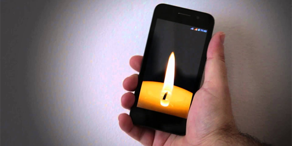

Blowing Out Candles Virtually: The Weird and Wonderful Psychology Behind It
Blowing out candles on a cake is one of the most beloved traditions across the world. But have you ever stopped to think about why we do it? It turns out there’s a lot more going on in our brains than just the excitement of a birthday or special occasion. Today, let’s explore the fascinating psychology behind the ritual of blowing out candles, and how Cakelia’s virtual candles can bring that same joy and magic to your screen.
Why We Blow Out Candles
The tradition of blowing out candles dates all the way back to ancient Greece, where people believed the smoke from extinguished candles would carry their wishes to the gods. Over time, this evolved into a modern-day birthday tradition where each person makes a wish before blowing out the candles. But there’s more to it than just the wish – the act of blowing out candles has psychological significance, too. It’s a symbolic moment that marks the transition of time, encourages self-reflection, and sparks hope for the future.
Psychologically, blowing out candles helps create a sense of control and closure. It’s a way to manifest your desires, putting them out into the world in the most magical way possible. The very act of extinguishing the flame triggers feelings of accomplishment and celebration.
The Virtual Twist: Same Feeling, Different Medium
Now, let’s bring it into the 21st century! With Cakelia’s virtual cake feature, you can still experience the same psychological benefits – even if you’re miles away from your loved ones. When you blow out virtual candles, your microphone picks up the air pressure from your breath, simulating the experience of extinguishing a flame. The tradition remains, and the feeling of joy and connection is just as real.
Why It Works
The reason blowing out candles virtually feels so real is because it taps into the same mental and emotional triggers as the physical act. The sound of a puff of air, the flicker of light before it’s extinguished, and the connection you feel to others in the process – all of this makes the experience complete, even in the digital world.
Virtual Candles, Real Magic
So, the next time you find yourself celebrating online, don’t miss out on the fun. Blow out a virtual candle and make a wish. Whether you’re celebrating with family, friends, or solo, Cakelia’s interactive cake feature allows you to keep the magic alive, no matter where you are. It’s tradition with a modern twist, and it’s here to stay.